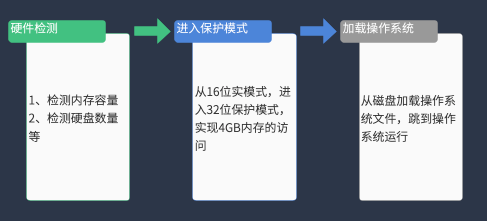

构建一个简易x86系统的准备
环境配置：win10+cmake-3.23.1-windows-i386+x86_64-elf-tools-windows
（强烈建议使用网课提供的工具链版本，否则会有很多问题）
前置知识
计算机的启动流程
上电启动后，CPU处于16位运行的实模式，分页机制禁止，此时只有1MB内存可用，没有特权级
CPU跳转到BIOS的入口 (地址为
0XFFFF0，也就是说，BIOS程序的第一条指令就设计在这个位置)开始执行- BIOS进行硬件自检(POST)，主板、硬盘、显卡、内存等自检，并保存一些配置数据到特定内存地址处(如硬盘的数量)
- 根据配置的启动顺序(光驱、U盘、硬盘等)，加载引导代码运行。例，从硬盘启动时，将硬盘的第1扇区(主引导纪录)读取到0x7c00处并且跳转到该地址处运行
- 引导代码对操作系统的运行初始环境进行配置，并加载操作系统到内存中
- 跳转到操作系统运行。
实模式
实模式是计算机处理器（例如x86架构处理器）的一种工作模式，也是x86处理器最基础的操作模式，主要用于兼容早期的操作系统和软件，其目的是直接访问物理内存并提供简单的硬件控制机制。实模式在现代计算机中主要作为启动过渡模式存在，其核心功能已被保护模式和长模式（Long Mode，x86-64 架构的 64 位模式）取代。
实模式的主要特点
内存寻址方式
- 采用分段寻址（Segmented Addressing），通过 “段寄存器（如 CS、DS、ES、SS）+ 偏移地址” 的组合来生成 20 位物理地址（早期 8086 处理器），最大可访问内存空间为 1MB（地址范围：
0x00000~0xFFFFF）。 - 物理地址计算方式：
物理地址 = 段寄存器值 × 16（左移 4 位） + 偏移地址
例如：段寄存器值为0x1000，偏移地址为0x2000，则物理地址为0x1000×16 + 0x2000 = 0x12000。
- 采用分段寻址（Segmented Addressing），通过 “段寄存器（如 CS、DS、ES、SS）+ 偏移地址” 的组合来生成 20 位物理地址（早期 8086 处理器），最大可访问内存空间为 1MB（地址范围：
处理器权限
- 实模式下，处理器处于特权级 0（最高权限），程序可以直接访问硬件资源（如 I/O 端口、内存等），缺乏内存保护机制。这意味着应用程序可能因错误操作导致系统崩溃（例如覆盖操作系统代码）。
兼容性
- 实模式是 x86 处理器加电启动后的默认模式，用于加载和初始化操作系统，随后切换到保护模式（Protected Mode）以支持更大的内存空间和更安全的内存管理。
- 现代操作系统（如 Windows、Linux）在启动初期会短暂运行在实模式，完成硬件检测、初始化寄存器等操作后，再切换到保护模式。
保护模式
保护模式是现代计算机处理器的一种工作模式，与早期的实模式宪兵队，他是为了解决实模式的局限性（内存寻址空间小，缺乏内存保护机制等）设计的，是现代操作系统的运行基础。
整体的操作流程
在VSCode中编写C源文件、汇编文件、链接脚本；
CMake根据配置脚本，调用GCC对源文件进行编译和汇编，调用LD进行链接生成可执行的ELF文件；
- CMake还会调用OBJCOPY将ELF文件进行缩小，或者转换成BIN文件；
- 调试前，Visual Studio Code调用一些小工具将ELF、BIN文件写入磁盘映像；
- 调试时，QEMU加载磁盘映像文件，然后等待GDB连接，这里主要是在tasks.json和launch.json中进行编写；
- GDB连接上QEMU，开始正式的调试过程。
我们要实现的是自己的引导代码和操作系统，引导程序的作用如下：采用二级加载模式，boot只完成loader加载工作，再有loader完成具体的初始化工作和内核的加载。也就是Boot->loader->kernel的流程。
